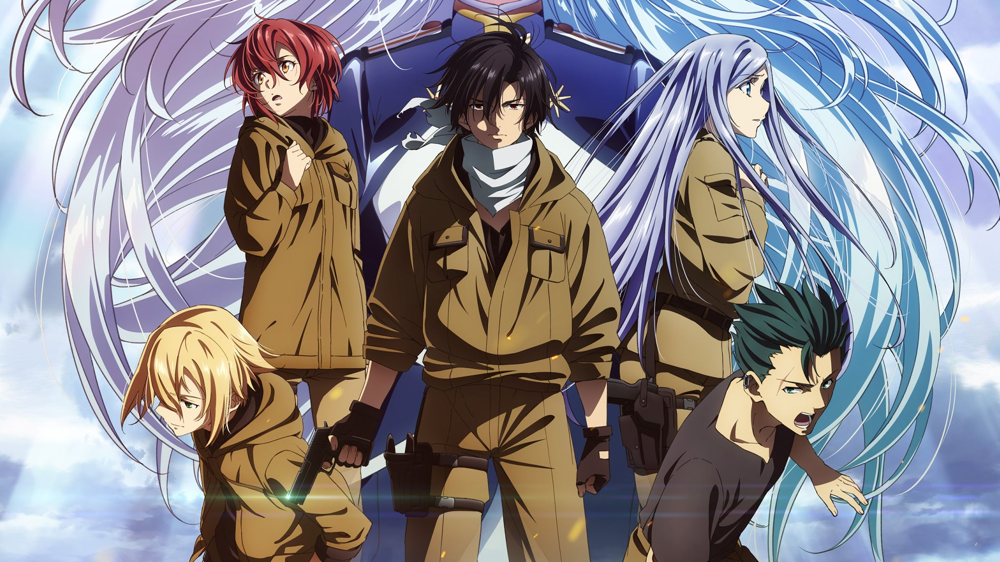

⌛ February 11, 2023
Code Geass is a military and race based anime that depicts a lot of real life issues. It is primarily about wars and internal conflict between "Britannians" and 11's. These Britannians are equivalent to a noble and the 11's equates to a commoner. The main character named "Lelouch" is a smart and empirical person that aims to avenge his mother's death and her sister's traumatizing experience that led to her disability.
There are powers called "Geass" in their world and the ability varies from person to person. Lelouch's geass ability is to be able to command people by making eye contact to the target. This anime will display a great variety of societal and military issue while the protagonist has an interesting ability so make sure to check it out.
Attack on Titan is an anime that is about man-eating titans and people are protected by giant walls from the titans. There is an army called "Scout Regiment" that is specialized to kill titans and reclaim territories for humans. The protagonist is named "Eren" and starts off with being merciful but eventually changes throughout the series.
The way on how people are deemed on their strength is based on their skill to use "omni-directional mobility gear" that is made for defeating titans. Some people can also turn into titans themselves and the anime has a lot of mysteries and revelations therefore being intriguing to watch.
Violet Evergarden pivots on the perspective of a war veteran that is now trying to live peacefully after war. It highlights a great outlook on the effect of war of someone who participated and survived. The protagonist is named "Violet" which is a veteran that barely shows any signs of emotions that aims to find out the meaning behind her last moments with his senior.
This series will be portraying sad yet wholesome stories from other people in the main character's point of view. If you are looking for an anime that will make you weep then this anime is perfect for you.
Akame Ga Kill centralizes on corrupt system of a government that will tackle serious matters like indoctrination, poverty, corruption, and other more. It is a gore anime that doesn't censore any brutality and will trigger your sense of societal awareness. The main character is named "Tatsumi" that starts off as forgiving person but ultimately becomes unsparing due to a traumatizin experience.
He sides with a group of outlaws that sights to demolish the immortal system that rules over their country. If you want an anime that doesn't have a forgiving main character then this anime will surely delight you.
Death Note's story focal point is punishing perpetrators by death, it will address the moral values of a person. The main character is named "Light Yagami" that is a smart and diligent student and lives a normal life until one moment that changed his fate.
Light Yagami picks up a notebook that fell from the sky and this notebook gave him the ability to kill anyone by just knowing their name. If you like a merciless main character then this anime will be absolutely entertaining to watch.
Anime Connects is recommendation of similar anime, characters, plots, and even openings. This shall help
you find more anime that fits to your liking and standard
The chance of anime getting feature does
not rely on popularity on its selection of feature so even underrated anime are welcome.